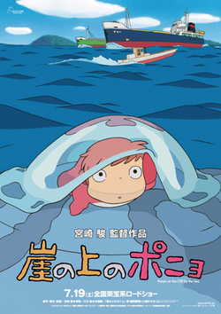
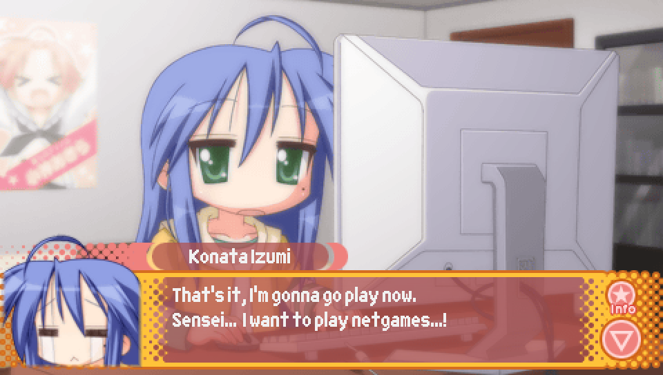
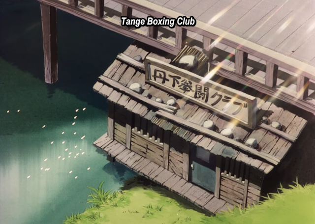

Episode 3: Lucky Star Universe |

The name of the Episode itself is a reference to the RPG "Phantasy Star Universe",
developed and published by Sega in 2006.
|

This line from Konata in the intro, where she talks about a game where you can
talk to a fish person is in reference to the 1999 Sega Dreamcast game "Seaman",
in which the player raises a fictional creature known as the "Seaman".
While the Seaman takes on many forms throughout the game as it grows up,
its most iconic form is as "Gillman", in which it takes on the appearance of a
fish with a humanoid face.
Additionally, being able to talk to the Seaman using a microphone attached
to the controller was a major selling point of the game.

There's also a second reference made in this line, with the part about the
fish girl who lived "at the top or bottom of a cliff". This is a reference
to the 2008 Hayao Miyazaki film, "Ponyo", which is about a humanoid fish girl
who goes by the same name. The Japanese name of the film is "Ponyo on Top of the Cliff",
and the film was also inspired by a book by Natsume Souseki called "The Gate" about a man
living at the bottom of a cliff. This is why Konata is uncertain about whether it was
the top or the bottom of a cliff.

|
This line from Konata in the intro about counting the prime numbers
is in reference to the character Enrico Pucci, the antagonist of the sixth part
of "Jojo's Bizarre Adventure": "Stone Ocean". Specifically, a scene where he
counts the prime numbers in order to maintain his composure as poisonous frogs
fall down upon him.
According to Pucci, the prime numbers give him strength due to their indivisible nature,
but clearly Konata does not have the same attachment to them.
A clip from the "Jojo's Bizarre Adventure" anime featuring this moment
can be viewed here: https://www.youtube.com/watch?v=ZFQhOkEp-yo
|

This has already been discussed in the Episode 1 and Episode 2 translator's notes, but to reiterate, this line is
in reference to an iconic scene from the series "Slam Dunk" where Hisashi Mitsui, a former basketball player
turned delinquent after a knee injury, breaks down in tears and wishes to become a basketball player once again
upon seeing his old coach whom he greatly respected.
In the anime adaptation, the scene appears in Episode 27 from 17:20 to 19:30, which can be viewed here:
https://www.youtube.com/watch?v=5GIyyxM87qQ&t=1080s
|

In this line from the intro, Konata's quote is a reference to a notable quote from
famous Japanese gamer and former Hudson Soft executive, Toshiyuki Takahashi, better known
as "Takahashi Meijin", meaning "Master Takahashi". This famous quote of his is as follows:
"Don’t play more than an hour of games each day.
Go out and play. Work and study hard.
When you do better, you’ll enjoy the games more, too.
You are the future of our country."

As an additional fun fact, if you are familiar with Hudson Soft's
"Adventure Island" series, Takahashi Meijin is actually the protagonist
of the series, though the character was renamed to "Master Higgins" abroad.

|

If you listen to the voice acting, or have seen the original Japanese line
for this moment where Konata carefully enters her password to log into Lucky Star Universe,
you'll notice that she says "BS, BS!". While it might be funny to imagine it as Konata
cursing at the computer, one of the names in Japanese for the "backspace" key on a computer keyboard
is the "BS" key. So Konata is merely just saying that she is pressing the backspace key to correct her mistake.
|

The poster seen in this background of Konata's bedroom is for the game "Shoukan Shoujo: Elemental Girl Calling",
another game made by VRIDGE, the developers of Ryouou Gakuen Outousai. Specifically, the game had a few different
boxarts, with this art being one of them.
|

The name of the artwork that won the grand prize in the Lucky Star Universe art contest,
"Brighter than Indigo Blue", is a reference to the 2005 adult visual novel "Brighter than Dawning Blue".
|

While it likely goes without saying, the "tvittor" feed seen on the Lucky Star Universe website
is a parody of the social media website "twitter".

|

The "bearded tactician" Konata is referring to is likely Chinese historical figure,
Zhuge Liang. As mentioned in the notes on Episode 2, he is an important character
in the historical novel "Romance of the Three Kingdoms" and was known for being a great military tactician.

|

In the second intro scene, when Konata hits her head on a desk,
she blames Tsukasa and says it'll result in her receiving
"Oyashiro-sama's Curse".
Oyashiro-sama's Curse is a reference to the "Higurashi" series,
in which Oyashiro-sama is a deity that guards Hinamizawa, but is
said to curse you if you disobey his rules. The effects of the curse
is receiving what is known in the series as "Hinamizawa Syndrome",
a brain disease that causes severe anxiety, paranoia, and delusions.
One of Oyashiro-sama's rules has to do with being trustworthy,
and given that Konata believes the chair falling apart
leading to her bumping her head was Tsukasa's doing, she's accusing
Tsukasa of not being trustworthy with this line.
|
Following the above reference, when Tsukasa denies involvement,
claiming that the chair fell apart on its own, Konata accuses her
of lying with this line.
As mentioned in the notes for Episode 2, this is also in reference to "Higurashi",
in which characters will often shout "LIES!!" with an intense voice and facial expression.

|
The above reference is followed up on yet again with this line from
Konata, claiming that she sees that Tsukasa is holding a cleaver or a handsaw.
Of course, Tsukasa is actually holding neither. Instead, Konata is just making reference
to the characters Rena Ryuuguu from "Higurashi" and Kotonoha Katsura from "School Days".
For Rena, she has the nickname "cleaver girl" due to her use of a cleaver as a weapon
for killing people. For Kotonoha, she is known for killing people using a handsaw.
Additionally, continuing the theme of distrust, both Rena and Kotonoha end up killing
as a result of distrust and paranoia. In Rena's case, it's due to the effects of
Hinamizawa Syndrone. In Kotonoha's case, it's partially out of suspicions that
a competing love interest is not actually pregnant, and so slices open her stomach,
discovering that there was in fact no baby inside.


|

When Kagami intrudes on the above reference-making,
she actually makes a reference of her own, that being to a notable moment from
episode 38 of "Mobile Suit Zeta Gundam", where character Bright Noa expresses frustration
over their barrage being too weak against the enemy sporting several gundam units that are new models.

The moment in question can be viewed here:
https://www.youtube.com/watch?v=Edtz6ucE2uE&t=753s
|

This line from Konata near the end of the second intro scene about opening your "fifth eye"
is likely a reference to the "five eyes" talked about in Buddhism, with the five eyes being
the physical eye, the heavenly eye, the wisdom eye, the dharma eye, and the Buddha eye.
While there is much you could learn about these kinds of eyes, I don't believe this reference
is getting at anything deeper than just generally referring to the concept.
An article on the topic can be found here, if you are interested.
https://www.baus.org/en/publications/dr-shens-collections/the-five-eyes/
|
On the way to school on the first day, if the protagonist runs into Patty, she'll give him the above advice
when he starts to question how it is that he knows where the school is.
The line "Don't think, feel!" is taken from the 1973 martial arts movie "Enter the Dragon", starring Bruce Lee.
Notably, the movie was released just days after Bruce Lee passed away and was his last completed film appearance.
The scene in which the line is said has Bruce Lee's character giving a lesson to a student about how
one needs to fight with "emotional content" and perform actions with feeling but not anger.
When the student then performs a kick to Bruce Lee's satisfaction, he asks how it felt, leading the student
to pause and think, but Bruce Lee scolds him for this, telling him "Don't think, feel!".
The scene in question can be viewed here:
https://www.youtube.com/watch?v=2d5o8d1kitM
|
As part of Patty's strange ramblings if the protagonist runs into her on the way to school on the first day,
she says that the bridge you cross is "Namidabashi".
Namidabashi, which translates to "bridge of tears", is a real bridge that existed in Sanya, Tokyo that has since
been demolished, but was so named due to it being the place where criminals would say farewell to family members
before crossing the bridge to be executed at the Kozukappara Execution Grounds.
However, Patty's reference to the bridge is not because of that, but is instead due to the bridge's appearance
in the series "Ashita no Joe", which takes place in Sanya. The protagonist, Joe, crosses this bridge in the first
episode to enter Sanya, which is what kicks off the events of the series.
Additionally, Danpei Tange, who takes Joe in and trains him to become a boxer,
lives in a shack located underneath Namidabashi.

|

Following the above rambling from Patty, she says "sieg moe". Though this may bring certain imagery to mind,
this is not a reference to Adolf Hitler, at least not directly.
Specifically, this is a reference to a famous moment from "Mobile Suit Gundam", in which Gihren Zabi,
the series' main antagonist, gives a funeral speech for his brother, Garma Zabi, rallying the people of Zeon
to fight back against the Earth Federation. The speech ends by repeatedly chanting "sieg Zeon",
meaning "victory to Zeon".
So though it might seem like Patty may be making a highly questionable reference, and even though
comparisons are made between Garma Zabi and Adolf Hitler within Mobile Suit Gundam itself,
Patty is merely quoting this speech and declaring "victory to moe".

The moment can be seen here:
https://www.youtube.com/watch?v=9Q91pwseWhQ&t=80s
|

If the protagonist chooses to look up the school online before heading out on his first day,
you'll be shown his computer's desktop, which has shortcuts on the left side of the screen
for two programs that are references to real programs.
The first one, appearing as the second from the bottom, is "FOX Explorer", which is a combination
of the internet browsers "Mozilla Firefox" and "Internet Explorer". The icon is even a combination
of the two, with it being the Firefox logo, except instead of the fox being wrapped around the Earth,
it's wrapped around the Internet Explorer "e".

As for the second program, appearing at the bottom, is "Soul Link Messenger", which has a logo and name
that resembles Microsoft's instant messenger app, "MSN Messenger".

|
If the protagonist runs into Hiyori on the way to school on his first day,
he'll find her when she's deep in a delusion, leading the protagonist to consider calling 110.
110 is the emergency telephone number in Japan, similar to 911 in the United States or 999 in the United Kingdom.
|
If the protagonist runs into Hiyori on the way to school on his first day,
as part of Hiyori's delusions, she says this after noticing the protagonist.
This line is in reference to the infamous homosexual one-shot pornographic manga "Kuso Miso Technique".
Specifically, the opening to the manga, where Takakazu Abe greets Masakichi Michishita by unzipping his
jumpsuit, revealing his genitalia before saying "yaranaika?", meaning "shall we do it?", as an invitation
to have homosexual sex with him.
Note that the "let do it" below is just the result of poor translation. It is normally referenced either by
keeping it in Japanese or by translating it as "shall we do it?".
|

The title of the Unlucky★Sisters segment found in this Episode's version of Episode 0,
"Den-noh Moe Coil", is named after the 2007 science fiction anime "Den-noh Coil", which is about a
group of children who by putting on special AR glasses are able to explore the hidden virtual side
of the city they live in.
|

In the bottom right corner of the box for Lucky Star Universe, the game's publisher,
"ZEGA" can be seen. This is a parody of "SEGA", the publisher and developer of "Phantasy Star Universe",
the game "Lucky Star Universe" is parodying with its title.

Additionally, in the bottom left corner of the box you can see that the game is for
"Macindows VRISTA", which, as has been discussed in the notes for Episode 1,
is a parody of both the Macintosh and Windows Vista operating systems.
Also, the Japanese characters you see next to "VRISTA" and below "ONLINE" on the top left of the box are "専用",
which means "exclusively for", so it's saying that it's exclusively an online game for Macindows VRISTA.
|


A reference that likely needs no explanation, but for the sake of completeness,
if the protagonist runs into Miyuki first upon entering the world of Lucky Star Universe,
one of the choices when deciding what they should do is for the protagonist to proclaim
"Let's be like Adam and Eve!". This is of course in reference to the Bible, in which
Adam and Eve are the first man and woman created by God and are therefore the start of
the human race.
As the protagonist claims that the world must have been destroyed, leaving Miyuki
and himself as the only remaining humans, they would be the starting point of a new human race,
as all human beings from that point onward would be their descendents.

|


Though we never see the protagonist's outfit in Lucky Star Universe,
you may wonder if we can get an idea from a potential "gambler" or similar chance-based
class that exists in Ragnarok Online. Unfortunately, there is no such class in that game,
so you'll simply have to leave it to your imagination.
|

The name of Hinata's character in Lucky Star Universe, Sunny,
is based on the English meaning of the kanji one would use to write Hinata's name in Japanese.
Though the kanji used to write Hinata's name has never been confirmed, with it always being written
in hiragana instead, going off the pronunciation, a likely guess Japanese people would make is "日向"
which means "in the sun" or "sunny place".
|


Appearing immediately after the line from the previous note, Minami mishears "merchant" as "Maa-chan".
This is something that is a bit lost in translation, as it relies on the English loan word "マーチャント",
pronounced "maachanto", being something that could be plausibly misheard as something else in Japanese.
In Minami's case, she thought Konata was saying that Sunny wasn't actually her name, and that based on
her clothing, Konata could tell that Sunny was actually some character she was familiar with named "Maa",
with Konata adding the "chan" honorific to the end further emphasizing this point.
Of course, Konata wasn't actually saying that, and was just saying that Sunny looked like a merchant.
It wasn't really possible to translate this misunderstanding into English. Since "マーチャント" is a loan word
that an English speaker playing this game would be able to clearly hear and understand means "merchant",
I was stuck having to think up things one might be able to mishear "merchant" as in English.
Unfortunately, there aren't any homophones of "merchant" in English, with the best mishearing I could come up with
being "myrrh chant", which is something that nobody would ever plausibly mishear "merchant" as. As a result,
I decided to simply literally translate the line and provide this note you are reading now as an explanation.
|

The red, apple-shaped fruit Sunny offers to the cast as a sign of goodwill is named the "Fruit of Proclus".
"Proclus" is likely referring to the Greek Neoplatonist philospher Proclus Diadochus, but it appears his name
was merely used to sound cool and ancient, as I could find no association between Proclus and fruit in my research.

|

If the protagonist chooses to taste test the "Fruit of Proclus" for poison,
he'll exclaim that it is "lip-smacking good!" upon trying it.
In the original Japanese script, he actually says "まいうー" (maiuu), which is an anagram of the
Japanese word "umai", meaning "delicious". While "maiuu" started out as just a slang term for "delicious",
it was popularized through the Japanese TV show "Ganso! Debuya", in which the term would often be used
as a reaction to good-tasting food. Nowadays, "maiuu" as a word is strongly tied to this show.

A commercial advertising the show, in which the catchphrase appears, can be seen here:
https://www.youtube.com/watch?v=Yv2lXGgrHUM
However, "maiuu" doesn't have a direct English equivalent and would only cause confusion
if I were to include it unchanged. Instead, I decided on "lip-smacking good" as I felt it had a similar
nuance and feeling to maiuu in terms of the contexts in which either word would be used
in their respective languages. However, "lip-smacking good" is not a reference to anything in particular.
|

The drug Sunny tries to sell to the cast after feeding them Fruit of Proclus,
the "Heal Drink Super", is based on the real life "potion" energy drink that Suntory sold in collaboration
with the 2006 MMO "Final Fantasy XII". Note that the heal drink super is made by "Yontory", which parodies
Suntory by taking the "sun"--which sounds similar to "san", meaning "three" in Japanese--and replacing it with
"yon", which is one way to say "four" in Japanese.

A commercial advertising the Final Fantasy XII potion energy drink can be seen here
https://www.youtube.com/watch?v=XA3cMGUy28w
|

The name of Hikage's character in Lucky Star Universe, Shadow,
is based on the English meaning of the kanji one would use to write Hikage's name in Japanese.
Though the kanji used to write Hikage's name has never been confirmed, with it always being written
in hiragana instead, going off the pronunciation, a likely guess Japanese people would make is "日陰"
which means "shade" or "shadow".
|

The catlike spirit that blows an entire tree away in one of the Dark Lord's attacks
is made to be a combination of Nyamou, the self-insert character for Lucky Star creator
Kagami Yoshimizu, and Star Platinum, who is the stand of Jotaro Kujo, the protagonist
of Part 3 of the "Jojo's Bizarre Adventure" series: "Stardust Crusaders".
As for the Japanese text that appears in the above CG, they just correspond to sound-effects
and can be transcribed as "boguoooh" and "oraah". This specific style of onomatopoeia text and the font used
is strongly associated with Jojo's Bizarre Adventure, even outside of Japan, and so has been left unmodified.


|

The name of the Unlucky★Sisters segment that occurs while the cast is travelling to the Dark Lord's castle,
"The Lack Swindler", is a parody of the 2003 manga "The Black Swindler", about protagonist Koshiro Kurosaki
becoming a swindler of swindlers to get revenge after his father lost his life savings to a swindler. As a swindler
of other swindlers, he becomes known as the titular "black swindler".
The Japanese name of "The Black Swindler" is "kurosagi", which is a literal combination of the Japanese word for
"black" (kuro) and the Japanese word for "swindle" (sagi). The original Japanese name for the Unlucky★Sisters
segment parodies this name by removing the first letter in "kurosagi", resulting in "urosagi".
There is a word, "uro-oboe" (うろ覚え), in Japanese that means "vague memory" or "vague recollection", and this word
is used to tie the title of the segment to the idea that you can't have a vague recollection when it comes to knowledge
about scams.
It was a nice coincidence for the English translation that removing the first letter in "black" results in "lack".
A lack of knowledge about scams is similar enough conceptually to a vague recollection of scam related knowledge,
so the parody carries over quite well. I suppose a "lack swindler" would be someone who swindles people who lack
knowledge about scams.

|


In the Unlucky★Sisters segment that occurs while the cast is travelling to the Dark Lord's castle,
if Yui correctly answers that all of the things Hinata stated are types of scams, the segment will end
with Hinata saying this line followed by Hinata and Hikage shouting "DOOOON!" while pointing forward.
Both of these things are in reference to the series "The Laughing Salesman". The statement from Hinata,
"We're here to fill the gaps within your soul" is based on the titular character, Moguro Fukuzou's, catchphrase:
"I'm here to fill the gaps within your soul". The pointing while shouting "DOOOON!" is an iconic action performed
by Moguro when insisting that one of his customers will either accept his offer or will follow the terms of an
offer they had previously agreed to. "DOOOON!", which is what the Japanese text is saying, is just an otomotopoeia
for a booming sound and was kept in Japanese due to the specific Japanese font and appearance of the effect being
an important part of the iconography, similar to the otomatopoeia used in the previous
Jojo's Bizarre Adventure reference.


An example of Moguro's iconic point can be seen here (WARNING: BRIGHT FLASHING IMAGES):
https://www.youtube.com/watch?v=GPGsP7RQIFw&t=202s
|

Chun, the mastermind behind the production and sale of the cheated "Heal Drink Super" items,
is an original character created for Lucky Star: Ryouou Gakuen Outousai. However, her design
does take inspiration from many sources. The first is her name, Chun, which is likely in reference
to the famous Street Fighter character, Chun-Li, as both characters are Chinese and wear white odango bun covers.

However, while the white odango bun covers are certainly a feature strongly associated with Chun-Li, this and many
aspects of Chun's physical appearance are actually based on the characters from the "Akira Nation"
bonus strips included at the ends of volumes 5-9 of the Lucky Star manga. The cast consists of Akira Kogami
and her classmates Madoka Ohara, Akuru Nakatani, and Rinko Otonashi. Chun wears the same kind of
glasses as Madoka; has Akuru's black hair; and has the eye shape, general hair style, and odango bun covers
of Rinko. Additionally, Chun is voiced by Hiromi Konno, the voice of Akira Kogami in the Lucky Star anime.

As for Chun's outfit, there are two sources of inspiration. The first, in line with the other character's designs
in Lucky Star Universe, is some light inspiration from the MMORPG "Ragnarok Online".
Specifically, the male and female Mage class from the game.


The second source of inspiration is the protagonist of the series "Fullmetal Alchemist", Edward Elric.
Primarily his color scheme of a red exterior color and a black interior color, as well as the white gloves that
both he and Chun wear.
The reason for Chun's outfit being connected to Edward Elric will be explained in a translator's note further down.

|

Chun's dialogue is written such that "are" and "our" are written as "R",
and many R sounds are emphasized. The reason for this is that in the original Japanese script,
Chun ends many of her sentences by saying the letter R, pronounced "aru".

Normally in these situations where characters have special sentence ending words or sounds,
these will just be preserved as-is in a translation, but in Chun's case, things are actually
a bit more complicated.
In Japanese, there are many words for the concept of "being". You have "desu" and "da", which
are a type of auxiliary verb known as a copula. Essentially, they are used for "X is Y" type sentences.
However, you also have the verbs "aru" and "iru", which are also auxiliary verbs used for various grammatical
purposes, such as describing things being in a certain state. They can also be used as regular old verbs to describe
the action of existing, with aru being used for nonliving things and iru being used for living things.
In the 19th century, there was a simplified dialect of Japanese used for purposes of trade and basic communication
with foreigners in which all of these various "being" words got reduced down just to "aru". I will refer to to this
dialect as the "aru" dialect from here on for simplicity.
Places where this dialect was used included parts of China that were under the control of the Imperial Japanese Army,
and so there were some Chinese people who would've used this dialect.
As a result of this, it's become somewhat of a stereotype to indicate a character is Chinese in some Japanese media
by having them use the "aru" dialect. Though it is worth noting that Chinese people who are learning
Japanese don't actually end up speaking this way in real life.
One example of a character that uses the "aru" dialect is China from the "Hetalia" series, who, as you can
likely infer, uses it to emphasize his role of being a stereotype of China as a country in general.

A clip of China using this "aru" dialect in Hetalia can be seen here:
https://www.youtube.com/watch?v=yXHzFRTok7w
So, as you can likely guess by now, because Chun is Chinese, the writers are having her
end her sentences with "R", which again is pronounced "aru" in Japanese, in order to
mimic the "aru" dialect stereotypically associated with Chinese people. This is true,
but it is worth noting that this is not simply the same as having the "aru" dialect
but replacing the "aru" with "R". Instead, this dialect is being taken to a comedic extreme,
such that it's not as if Chun is simply using "aru" for all "being" words as a dialectic simplification,
but is literally saying the roman alphabet letter "R" at the end of sentences for no apparent reason,
in a way that resembles overuse of "desu" in stereotypical "Westerner Japanese" used by people like Patty.
In fact, in the above line, Chun even uses the verb "aru" in a way consistent with how it would be used in
standard Japanese (i.e. not just the "aru" dialect), but then appends "R" to the end of it, creating "aru R".
In short, while Chun's use of R is meant to mimic the Chinese stereotype, it's also meant
to come off as someone randomly adding "R" to the end of sentences in a comedic fashion.
This is why I have chosen to adapt this by having Chun randomly emphasize R sounds in English.
|

In Chun's sales pitch, when she says that you can pay for Heal Drink Supers in up to
thirty installments with interest and fees covered by her company, this is in reference
to the Japanese mail order company "Japanet Takata", which offers the same option for many
of the products you can purchase from them. Her overall sales pitch is also meant to resemble
the kinds of infomercials that Japanet Takata does.

An example of one of these Japanet Takata infomercials can be seen here:
https://www.youtube.com/watch?v=lxPdxdICDbw
|

If the protagonist and some of the party members get arrested by Chun's henchmen,
when Konata breaks down their cell wall to free them, she says the above line.
This is a reference to a moment occuring in episode 3 of the "Devil May Cry" anime series from 2007,
in which protagonist Dante breaks into a mansion to rescue a woman from being murdered,
entering by shooting down the front door. He then makes a similar quip about knocking too hard.

The moment in question can be viewed here:
https://www.youtube.com/watch?v=Qzl6-b__m6E&t=135
|

Following the above "Devil May Cry" reference, Konata says that things will get "R-rated from here on".
This is another reference to the "Devil May Cry" 2007 anime series, and refers to a moment from the first episode
where supporting character Patty Lowell is rescued from devils pretending to be Patty's mother on a stage.
Before Dante finishes dealing with the devils, he makes a backdrop fall to prevent Patty from witnessing
further violence, telling her that "It gets R-rated from here on".

The moment in question can be viewed here:
https://www.youtube.com/watch?v=_uE5xNJFJqA&t=25s
|

If the protagonist and the rest of the party manage to successfully escape capture by Chun's henchmen,
Tsukasa will say her catchphrase "Dondake!" in response to Shadow explaining how she eats salted rice porridge
for three meals a day. As explained in the Episode 2 translator's notes, "dondake" is a slang term that is
derived from the Japanese "doredake", meaning "how much?" or "to what extent?". However, "dondake" is mostly
just used by Japanese high school girls as a general exclamation of surprise, and is similar to "oh my god" in English.
However, Tsukasa's use of "dondake" is also likely a reference to its use in Gintama, being described as an
exclamation for "boke" or "funnyman" type characters in Japanese comedy, which Tsukasa is meant to be.
This is why it is left untranslated.

The clip from Gintama can be seen here:
https://www.youtube.com/watch?v=6kdZEcZFIkA
|

If the protagonist and the rest of the party successfully escape capture by Chun's henchmen,
and the protagonist asks Sunny and Shadow if they have trouble going outside, Konata will comment
on how his question seems like a roundabout way of asking if they are hikikomori.
For those who do not know this term, a hikikomori is a shut-in, someone who lives in social isolation
and stays at home as much as possible and often does not have a proper job. While the reasons one may
become a hikikomori are varied, this specific term tends to carry a connotation of a Japanese person who is
disillusioned by the idea of living a normal life as an employed person, due to things like Japan's
work culture, or a lack of good job prospects in an area of work that the person is passionate about.
Hikikomori are also stereotypically associated with otaku culture, with their otaku interests
being a factor in why they cannot find work or do not wish to have the responsibility associated with
a standard job in Japan. Consequently, such hikikomori may attempt to make money through their otaku interests,
such as by trying to make money from online games, or from producing doujin in the form of comics, stories, games,
and other creative works. This is why the protagonist thinks Sunny and Shadow may be hikikomori upon hearing that
they joined Chun's Happiness Program and sell doujinshi in order to make a living.
|

Before entering the abandoned labyrinth, Tsukasa suggests they use her divination powers
to help them figure out what path they will need to take in order to make it through.
She then performs a technique she calls the "Mimizu Method".
What Tsukasa is actually performing is "water divination" as seen in the series "Hunter x Hunter",
in which a person takes a glass of water with a leaf sitting on top of the water, and focuses their
aura on to the water. Depending on the change that takes place in the water, it determines
the affinity of that person's aura. This is why Konata later explains that Tsukasa's ability doesn't
actually predict the future or anything like that, but instead just determines the class someone is
best suited for, as is the case with water divination.


A clip from Hunter x Hunter explaining water divination in more detail can be seen here:
https://www.youtube.com/watch?v=WUUuLUjBlqg
Additionally, the name "Mimizu Method" is derived from what "water divination" is called in Japanese,
which is "mizumi-shiki". In the original Japanese script of Ryouou Gakuen Outousai, Tsukasa calls it
"mimizu-shiki". There is also the additional reference in that the kanji used to write the "Mimizu"
in "Mimizu Method" is "美水", which can also be read as "Yoshimizu", and is the way you write the
last name of Lucky Star's creator, Kagami Yoshimizu.
|

After Tsukasa's "divination powers" are shown to be useless for the current situation,
the above CG appears, marking Tsukasa as "designated for assignment". This is a baseball term,
and refers to players contracted with a Major League Baseball team being removed from the extended
team roster, after which they may be sent to the Minor League, traded, released, placed on waivers, etc.
What's important to understand here is that a player being "designated for assignment"
indicates an intention on the part of the team to get rid of the player in some fashion.
That is to say, because Tsukasa isn't going to be of much use, she's jokingly being placed
in this state as if the cast is putting her up to be traded away to another party.
|

The section of this Episode where you guide the protagonist through the secret underground labyrinth
is generally based on old dungeon crawling RPGs of the 80s and 90s, but the specific aesthetic of
white lines to mark the walls against a purely black background is based on the visuals of the
1981 PC game "Wizardry".

Some gameplay of the original 1981 release of "Wizardry" can be seen here:
https://www.youtube.com/watch?v=zYLn_ij5G10
|

One of the dialogues that can be found within the labyrinth has the protagonist recall that a famous
hunter once said that when people are lost they will tend to go left. He then also concludes that it may
be dangerous to go left as a result. As it turns out, while there's no danger in going left at this junction
in the labyrinth, going right at this point will take you to the hidden Trading Card Shop in this Episode,
so this line is actually somewhat of a hint to the player.
As for the hunter being referenced by the protagonist, that would be the character Kurapika from the series
"Hunter x Hunter". He says this during the Hunter Exams in Episode 13 of the 1999 anime series during a section
where he and four other hunters have to traverse through Trick Tower, making decisions as a group
by pressing either the "X" or "O" button on special wrist timers. When the group decides to go right at a junction,
Kurapika provides this fact as the reasoning for why going right was the better choice over left.
Because people who are lost tend to go left, the people running the Hunter Exams would have taken this fact
into account by making the left path more difficult.


The moment in question from "Hunter x Hunter" can be seen here:
https://www.youtube.com/watch?v=CYDkQzAVHLQ&t=575s
|

This line that the protagonist says during the 5th appearance of Minoru Shiraishi within the labyrinth
contains two references. The first is the quotation "If the cuckoo does not sing, wait for it",
which has been referenced many times before at this point. He is quoting a poem taught to Japanese children
about the different approaches taken by Japan's three great Daimyo, illustrated by three different responses
to a cuckoo not singing. In this case, the protagonist is saying to employ the method of Tokugawa Ieyasu by
waiting for Minoru Shiraishi to speak on his own rather than trying to compel him to speak.
The second reference is more interesting, that being the "Min-min mirakuru Minorun-run", which is a lyric
from a parody of the song "Koi no Mikuru Densetsu" performed by Minoru Shiraishi. "Koi no Mikuru Densetsu"
is the opening song to the movie the SOS Brigade makes for the culture festival in the
"The Melancholy of Haruhi Suzumiya" anime series.

The opening in question, as well as the full version of the song "Koi no Mikuru Densetsu" can be
seen via the below links.
https://www.youtube.com/watch?v=O7nk1dLGMtk
https://www.youtube.com/watch?v=uM3lPuWFPvk
As for the connection to Minoru Shiraishi, in the ending of Episode 15 of the Lucky Star anime,
Minoru Shiraishi parodies this song by singing his own version called "Koi no Minoru Densetsu".
This would later get turned into a proper full length song in the Lucky Star album
"Minoru Shiraishi's Lullabies for Men".

The ending sequence to episode 15 of the Lucky Star anime, as well as the full version of
"Koi no Minoru Densetsu" can be seen via the below links.
https://www.youtube.com/watch?v=LovI72-BHv4
https://www.youtube.com/watch?v=RbYUymfLmp0
|

In the 6th and final appearance of Minoru Shiraishi within the labyrinth, Minoru gives the protagonist
an envelope containing 1,000,000 teek, equivalent to 10,000 Japanese yen. Minoru apparently claims that
the money was something the protagonist had lost and so Minoru was returning it, though we don't directly
hear him say this.
The quote we do get from the protagonist, repeating what Minoru told him, has been left in Japanese
due to it being important for preserving what is being referenced, though it is explained with the third
line in the dialogue box. "Wa-wa-wa-wasuremono, ore no wasuremono" translated literally would be
"f-f-f-forgotten thing, my forgotten thing". In the original Japanese version of this line, it was not him
quoting Minoru, but instead merely the protagonist stuttering while asking for confirmation that the money
is in fact being given to him under the belief that he had lost it, which could be translated as
something like "F-F-F-Forgot this? I forgot this?".
However, this change was again made so the line could both make sense in English,
as well as preserve the reference that I am about to explain.
In the episode "The Melancholy of Haruhi Suzumiya Part 4" in the "The Melancholy of Haruhi Suzumiya"
anime series, after a dangerous encounter, Kyon is on the floor of his classroom holding on to
Yuki Nagato when one of Kyon's friends, Taniguchi, walks in on them and misinterprets the scene
as Kyon having a romantic moment with Yuki. Taniguchi is actually voiced by Minoru Shiraishi,
and while recording the lines for this scene, Minoru ad-libbed Taniguchi singing to himself about how he left
something behind in the classroom and was going back to get it. This ad-libbed line was none other than the
"wa-wa-wa-wasuremono" being referenced.
Though this line did get translated into English dubs as "f-f-f-forgot my bag", the English version of this line
didn't garner anywhere near the level of notoriety that the Japanese version did.

The moment in question from "The Melancholoy of Haruhi Suzumiya" can be seen here:
https://www.youtube.com/watch?v=HNBBJrZXFGU
The reference doesn't end there, though. In the ending sequence of episode 13 of the Lucky Star anime,
Minoru Shiraishi performs a longer version of this "wa-wa-wa-wasuremono" ad-lib, and similar to
"Koi no Minoru no Densetsu", it got turned into a proper full length song in the Lucky Star album
"Minoru Shiraishi's Lullabies for Men" as "Ore no Wasuremono".
The ending sequence to episode 13 of the Lucky Star anime, as well as the full song
"Ore no Wasuremono" can be seen via the below links.
https://www.youtube.com/watch?v=1vL6uqfCX8w
https://www.youtube.com/watch?v=7bd-dJ1fxTk
|

If the protagonist decides to enter the Trading Card Shop in the labyrinth, he will justify going inside
due to the fact that its presence is interesting and something that can't be overlooked.
Konata will then say the above line as a subtle jab at the protagonist's brazenness of wanting to buy
trading cards in a time like this.
As seen previously in the notes for Episode 2, this is a reference to a moment from chapter 4 of "Phantom Blood"
in "JoJo's Bizarre Adventure", where Dio Brando forcibly kisses Jonathan Joestar's girlfriend, Erina Pendleton,
stealing her first kiss from him. In response to this, some fellow bullies admire Dio for his boldness.


The anime adaptation of the scene can be viewed here.
https://www.youtube.com/watch?v=wLoRiTk-awo
|

In the first bad ending of Lucky Star Universe, when Chun has the protagonist and the others
surrounded, she says the above line. It may seem like a very over-the-top translation of what
Chun is actually saying, "yacchimaina", which has a more straightforward translation of simply "get them",
but as you can probably guess, it's written this way because it's referencing something.
Specifically, this line is in reference to the 2003 American film "Kill Bill: Volume 1".
A scene later on into the film is a confrontation between the film's protagonist, Beatrix "the Bride" Kiddo,
and one of the film's antagonists, O-Ren Ishii. After unsuccessfully trying to take down "the Bride"
with individual henchmen, O-Ren commands all of her lackeys to take her down all at once
by shouting "yacchimaina" which the film translates in an exaggerated fashion as "TEAR THE BITCH APART!".
In addition to the Ryouou Gakuen Outousai scene being somewhat similar to the scene from "Kill Bill",
another thing to note is that the character O-Ren Ishii is meant to be half-Chinese. Since Chun is Chinese
as well, this may have contributed to the decision to reference this line during this moment.

The relevant scene from "Kill Bill: Volume 1" can be viewed here:
https://www.youtube.com/watch?v=W6bT7Y-WfoY
|


In the final face-off against Chun, when the protagonist and the others catch her off guard with not many of
her henchmen present, Chun is forced to resort to using her special "transmutation" powers.
These powers of transmutation are a reference to the "Fullmetal Alchemist" series, in which alchemists are able
to use these same transmutation powers to manipulate matter. Most alchemists in that series must use a
transmutation circle in order to perform transmutation, but a small number of alchemists, such as protagonist
Edward Elric, can do so simply by clapping his hands together. This is why both the clapping of hands and the
use of a transmutation circle are featured in the CG. There's a good possibility that Chun's clothing was made to bear
some similarity to Edward Elric's in order to really help sell this reference.
Additionally, it may be worth noting that in the universe of "Fullmetal Alchemist", transmutation generally can't
be used to summon living beings in the way that Chun does. This kind of transmutation may be considered a form of
"human transmutation", which is deemed to be impossible. So that would contribute to the idea that Chun
would have to be cheating in order to have this kind of ability.

A scene from "Fullmetal Alchemist: Brotherhood" showing Ed's transmutation abilities can be seen here:
https://www.youtube.com/watch?v=wxKTRwrm8Cg&t=30s
|

In the second bad ending of Lucky Star Universe, after the protagonist refuses
the King of Gamblers' Sword, Shadow betrays the group and tries to hand the Dark Lord
over in exchange for the rest of them being spared, saying this line.
The original Japanese line, "oinochi choudai!", is a line famously associated with the character
Recoome from "Dragon Ball Z". In episode 64 of the original anime, Recoome says this near the end of his battle
against Vegeta before the former prepares his powerful "Eraser Gun" attack.
This is another example of a line that doesn't have the same notoriety in English. The English dub
of Dragon Ball Z didn't even translate this line, opting instead to just have Recoome shout at this moment.
This was later changed in Dragon Ball Z Kai's dub to "It's time to die!". However, I have opted for how it is translated
in the subbed version of Dragon Ball Z, as it is the more faithful translation of the two.

The scene in question from "Dragon Ball Z" can be viewed here:
https://www.youtube.com/watch?v=TtrDTmqz2uY&t=50
|

Following the above Dragon Ball Z reference, Shadow tells the Dark Lord to shut up, shouting it
three times in succession. This particular aspect of saying it three times, as well as the overall
delivery of the line is meant to be in reference to the anime "Shakugan no Shana", as this is a sort of
catchphrase of the titular character, Shana.

A compilation of moments where Shana says her iconic line can be viewed here:
https://www.youtube.com/watch?v=G0njP-oGunU
|


In the good ending of Lucky Star Universe, the beam of light attack Gamemaster Luminous uses to defeat
one of Chun's Henchmen is based on the beam attacks used in the "Ultraman" series. Luminous makes the same
pose members of the Inter Galactic Defense Force use when performing the attack,
and the attacks are obviously similar visually.

A compilation of moments where these beam attacks are used in "Ultraman" can be viewed here:
https://www.youtube.com/watch?v=6riWem7A8vU
|

Gamemaster Luminous, who appears in the good ending of Lucky Star Universe, is obviously made
to look and sound just like Hikaru Sakuraba. Like with Sunny and Shadow, Luminous' name is derived
from the kanji one would expect Hikaru's name to be written with. The name Hikaru is often written as
"光", which is the kanji for "light", so the connection to the word "luminous", which refers to the property
of glowing or being very bright, is pretty obvious.

As for the outfit Luminous wears, that is less obvious, as it's not based on Ragnarok Online like everyone else,
instead she is seemingly designed to look like a mage from the "Magical Girl Lyrical Nanoha" series,
with the characters Shamal and Hayate Yagami being used as reference.


|

In the Hikage mini scenario, if Hikage decides to challenge Konata to a game
in order to get her to buy something, she'll say the above line upon defeating Konata in the game.
Hikage's mention of South Town is in reference to the fictional location of the same name,
which is a setting that appears in games in the "Fatal Fury", "Art of Fighting",
and "The King of Fighters" fighting game series. That would imply that the game
Hikage and Konata were playing is from one of those series, and as Hikage said the game
had come out that same day, one might even suspect that we could identify the specific
game being played. However, there doesn't appear to be any game in these series that lines up
in terms of time, so that will have to remain a mystery.

|

In the Hinata mini scenario, if Hinata and Meito decide to sneak into the school during lunch break,
they will run into Guy Denki, leading to an interaction where Meito hits Guy and the latter will say the above line.
As mentioned in the notes for Episode 2, this is a reference to a scene from "Mobile Suit Gundam"
where Bright Noa slaps protagonist Amuro Ray, leading to Amuro responding that
not even his own father would hit him.

The moment in question can be viewed here:
https://www.youtube.com/watch?v=58pNa3o6F60
As for the "president" that Guy is talking about, he is referring to the president of Animate,
Yutaka Takahashi.

He is not only the president in real life, but is also a character in the
"Anime Tenchou" series. Below is a page from the "Anime Tenchou" manga where he appears.

|

In the Hinata mini scenario, immediately following the above "Mobile Suit Gundam" reference,
Hinata questions what Guy said, claiming that he seemed to be hit a lot in the "Anime Tenchou" manga.
While Guy Denki does appear in the "Anime Tenchou" manga, he doesn't actually appear all that often
compared to other characters due to him being the manager of a different store from Meito. He also
isn't hit particularly often, and I couldn't find him being hit by President Takahashi, but below you
can see a page from the manga where Meito hits him.

|

In the Hinata mini scenario, occuring a bit after the above reference to the "Anime Tenchou" manga,
Guy mentions that Meito is the only Anime Tenchou to get his own TV special.
This is in reference to the 2002 TV commercial mentioned in the notes for Episode 2, that features
Meito as the main character. Guy and many other Anime Tenchou characters also appear in this commercial,
so it is a bit odd for him to act as if only Meito was featured, but that is what he says nonetheless.

The commercial in question can be viewed here:
https://www.youtube.com/watch?v=EuMkeA3JTDM
|

In the Hinata mini scenario, if Hinata and Meito decide to wait in the gymnasium until school is over,
they'll be asked by Miyuki to help them practice for the Fate play by taking the place of some of the
actors. When Hinata asks Meito what they should do, he says this line.
Meito is directly quoting a line said by Archer in the Fate route of "Fate/Stay Night".
When Rin Tohsaka tells him to buy the rest of them time to escape from Berserker,
Archer agrees, stating that it is a smart decision. However, recognizing that Archer will likely
not survive on his own against Berserker, a conflicted Rin tries to say more to Archer,
but he cuts her off in order to say the aforementioned line, asserting his determination to defeat Bersker.

The scene can be viewed here from 1:08:13 to 1:11:40
https://www.youtube.com/watch?v=gHyUG_wQXn4&t=4093s
As an aside, it is interesting that Meito wants to play Archer in the play,
given that Meito's voice actor, Tomokazu Seki, is the voice of Gilgamesh in "Fate/Stay Night".
|

In the Ayano Lucky Lucky Memorial route, on the morning of the first day, the protagonist
will say "Oh no! I'm late! I'm gonna be so late!", but his words will be distorted and muffled
due to having a mouth full of bread.
As crazy as it may seem, in the original Japanese script, this line was written in such a way
to resemble a particular type of speech known as "misakurago", or "misakura language".
Misakurago is named after illustrator Nankotsu Misakura, who is of unknown gender and appearance.
They primarily illustrate sexually explicit light novels, and pretty much all examples of misakurago
are of a sexually explicit nature, so be aware of that if you research this yourself.

It was difficult to find a good example of misakurago that wasn't explicit, but the above panel from
a comic by pixiv user "酔拳使い O)))" has the necessary components of misakurago that I want to illustrate.
It is of a businessman impressed by a business proposal that he just saw, calling it "incredible".
Of course, his speech has had the markings of misakurago applied to it.
The first and most obvious marking of misakurago is elongating the end of words by holding out the
final vowel. This can be seen with the repeated お's at the ends of both of his speech bubbles, which
when read out loud turns things like the "no" in "sugoi no!" (it's incredible) into "sugoi noooooo!"
(it's incredibleeeee!).
The second marking of misakurago, which is harder to recognize if you can't read Japanese, is what I call
the "mushification" of certain syllables. Without going into full detail on how Japanese words are constructed,
for some syllables ending in the vowels "a", "u", and "o", such as "ka", "su", and "ho", there exists a similar
syllable that adds a sort of "y" sound in the middle, such as "kya", "syu", and "hyo". When written in hiragana,
these syllables will have these small ゃ, ゅ, and ょ symbols following a larger character, resulting in constructions
like きゃ, しゅ, and ひょ. By replacing syllables with these versions that have the "y" sound added, it can give a
kind of "mushy" feeling to the pronunciation of words. Using the above image as an example, it turns "sugoi"
into something pronounced closer to "shugoi". This comes across similarly to pronouncing the English word
"incredible" as "incwedible".

Looking at how the line from Ryouou Gakuen Outousai appears in the original Japanese,
hopefully you can now see the use of elongated vowel sounds and "mushified" syllables.
To help see it, if we transform the above line from misakurago back into normal Japanese,
the line would be romanized as "yabai! okureru! chikoku suru!".
With the misakurago re-applied, it is "hyafahi! okureryu! chukyokyusuryuuuuuh!".
Now, that's all well and good explaining how misakurago works and showing that it's being applied
to this line from the protagonist, but as for why the protagonist is being made to speak this way,
we have to return to misakurago's erotic origins.
Again, as crazy as it may seem, it really does appear that the writers wanted to make a hidden joke in how they
wrote this line by having it be in misakurago. Due to it having similarities to muffled speech,
it works both to represent that his mouth is filled with bread and as a dirty reference for "those who know".
Perhaps a female character in a hentai would speak similarly if she had certain other substances or objects
in her mouth...
|

In the Ayano Lucky Lucky Memorial route, on the morning of the first day on their way to school,
Konata explains to Ayano that she is following the rule of "search and destroy", said in English,
in order to succeed in her route with the protagonist.
The name of this rule "search and destroy", and it being said in English in the Japanese voice acting,
is a reference to the series "Hellsing", in which the titular Hellsing organization follows the same
command to "search and destroy" supernatural enemies.

An iconic moment from Hellsing's OVA adaptation of character Sir Integra Hellsing giving this directive to
"search and destroy" can be seen here:
https://www.youtube.com/watch?v=OxMnsz73QRE
Additionally, there is another element to this reference that is unfortunately lost in translation.
In the original Hellsing manga, "search and destroy", though pronounced in English, is written as the
kanji compound "見敵必殺", which can be literally read as meaning "see enemy certain kill".

In the original Japanese line in Ryouou Gakuen Outousai, what Konata pronounces as "search and destroy"
is written in a way that parodies the kanji compound used in Hellsing, replacing the kanji for "enemy" (敵)
with the kanji for "moe" (萌), and the kanji for "kill" (殺) with the kanji for "fall" (落),
resulting in "見萌必落" and turning the literal meaning into "see moe certain fall (in love)".

|

In the Ayano Lucky Lucky Memorial route, in the morning of the first day on the way to school,
Ayano will thoughtlessly take a breadcrumb off of the protagonist's lips and eat it. After this,
Konata will accuse Ayano of being a rival that threatens her quest to beat the protagonist's "route",
leading to her saying the above line.
As seen previously in Episode 2, this is a reference to a famous line from the girl's manga "Glass Mask".
Upon seeing 13 year old protagonist Maya Kitajima act out a three hour long play from memory without making
any mistakes, veteran actress Chigusa Tsukikage shouts "What a terrifying girl!", shocked by such an incredible
display of ability for someone so young.

|

The first lunch scene in the Ayano Lucky Lucky Memorial route copies a lot of dialogue from the
corresponding scene in the Tsukasa Lucky Lucky Memorial route. As a result, the above reference
from Tsukasa's route is also present in the Ayano route.
As discussed in the notes for Episode 1, the protagonist's intense reaction to eating "Konata's" bento
is in reference to the intense reactions shown by the character Genjirou Murata from the series
"Mister Ajikko" when he eats something delicious. These reactions are usually accompanied by his famous
explosive shout of "UMAIZOOOOOOO!!" (translated to "SOO GOOOOOD!!" but literally just means "DELICIOUS!!").

A MAD that showcases many of Genjirou Murata's intense reactions:
https://www.youtube.com/watch?v=cdE56dYmPpc
|

The first lunch scene in the Ayano Lucky Lucky Memorial route copies a lot of dialogue from the
corresponding scene in the Tsukasa Lucky Lucky Memorial route. As a result, the above reference
from Tsukasa's route is also present in the Ayano route.
As discussed in the notes for Episode 1, as the protagonist is raving about how good
"Konata's" bento is, he makes what would seem like a really strange compliment about it
being the "information revolution of bento". However, this is just in reference to a
famous line by the Japanese comedian Hikomaro: "the information revolution of taste!".

Specific information on the context behind this line is hard to come by, but it has
been referenced in various other media, such as Episode 86 of Gintama.

|

After school on the first day of Ayano's Lucky Lucky Memorial route,
Misao mistakenly reads from the wrong script and says one of Archer's lines.
The line is taken from the Fate route of "Fate/Stay Night" and occurs when Shirou, Saber, and Rin
are running away to escape from Berserker, with Archer staying behind to fight him.
Before Shirou leaves, Archer stops him to say some parting words of advice.
The line Misao recites is a cut-down version of that advice.


The full exchange can be seen here from 1:12:00 to 1:13:20
https://www.youtube.com/watch?v=gHyUG_wQXn4&t=4320s
|

Immediately following the above line from Misao, the protagonist continues the scene
with the above line. It comes from a scene taking place shortly after the scene the previous
line is from, where now Saber, Shirou, and Rin are fighting against Berserker.
Feeling powerless and unable to assist Saber in the battle, Shirou recalls Archer's advice
from the previous scene, and decides that what he needs to do to help Saber is use his abilities
to create a "sharp and gorgeous sword" that "will defeat the enemy in one blow".

This moment can be seen here from 2:03:00 to 2:05:10
https://www.youtube.com/watch?v=gHyUG_wQXn4&t=7380s
|

At the end of the Ayano Lucky Lucky Memorial route, when the protagonist reveals to Konata
that he intends to confess his love to Ayano, Konata shouts in surprise "WHAAAAAAAAAT!?" ("nanto!" in Japanese).
While the word "nanto" doesn't have any special significance in itself, the over-the-top way she shouts it
is intended to be in reference to Mobile Suit Gundam, in which this is a frequent exclamation.
In particular, she is imitating "Mobile Suit Gundam F91" protagonist Seabook Arno,
who was especially known for shouting "nanto!" in this way.

A compilation of moments from Mobile Suit Gundam where "nanto!" is shouted,
including one from Seabook Arno (at 0:24), can be seen here:
https://www.youtube.com/watch?v=tJYQ-3tUTT4
|

In the leadup to the Misao Lucky Lucky Memorial route, if the protagonist asks Misao for her thoughts
on Kagami's performance as Rin in the Archer Summoning Scene, it'll result in an interaction where Konata
ends up saying the above line.
The "Man, Kagamis really are a great thing" part is a reference to Japanese film critic Haruo Mizuno.
Haruo would host the Japanese TV show "Wednesday Roadshow" (later "Friday Roadshow"), which is a program
that airs movies with some commentary before and after the film.
Haruo would often end the post-movie commentary section and sign-off the program with the line
"Iya, eiga tte hontou ni ii mon desu ne!" (Man, movies really are a great thing!).
This line became a popular catchphrase associated with Haruo Mizuno, and is what Konata is referencing.

In the link below, you can see the post-movie commentary for the March 1997 airing of the 1996 Japanese film
"Shall we ダンス？" (Shall we dance). It was the last episode hosted by Haruo Mizuno.
He says the "Man, movies really are a great thing!" line at 1:32.
https://www.youtube.com/watch?v=MVtkX82qj98
Sadly, Haruo Mizuno passed away on June 10th, 2008, only 5 months after the release of
Lucky Star: Ryouou Gakuen Outousai. This reference was likely a bit bittersweet for
many of those who recognized it back in the day as a result.
|

In the Misao Lucky Lucky Memorial route, while the protagonist is walking to school on the first day
of the route, he monologues his doubts about being able to play Shirou properly in the Fate/Stay Night play.
As part of this, he wonders whether Miyuki and the others should've had him play "that "Wakame" guy" instead.
"That "Wakame" guy" is in reference to the character Shinji Matou from Fate/Stay Night.
Shinji has the nickname "Wakame", meaning "seaweed" in Japanese, due to his hair bearing
some resemblance to seaweed.

|


As seen in the Misao Lucky Lucky Memorial route and elsewhere, Konata and Misao don't like each other
and refer to each other with derogatory nicknames. These nicknames are "Chibikko" for Konata
and "Misakichi" for Misao.
The meaning of "Chibikko" is probably the more immediately obvious of the two.
It could be translated as "Chibi Girl" or "Chibi Kid".
Chibi is a word that has made its way into English and generally well-understood,
but for completeness refers to depictions of characters with tiny bodies and large heads.
Misao is comparing Konata to being like a chibi character because she is short in stature.
As for Misakichi, it is derived from Misao's standard nickname, "Misa",
but with the suffix "kichi" added to it.
In Japanese names, "kichi" is a suffix associated with boy names, such as "Kenkichi" or "Yukichi",
and so by adding such a suffix to Misao's name, Konata is essentially making fun of Misao for being a tomboy.
|

In the Misao Lucky Lucky Memorial route, the scene that the protagonist and Konata are practicing
after school on the first day of the route is taken almost verbatim from the spoken portions of a
scene during the "Unlimited Blade Works" route of "Fate/Stay Night" where Shirou asks Saber about
her food preferences.

The scene in question can be viewed here from 28:11 to 29:57.
https://www.youtube.com/watch?v=gUl2fGnHvSI&t=1691s
|

Following the previous note, the other scene that the protagonist practices after school
on the first day of the Misao Lucky Lucky Memorial route is taken directly from a scene
close to the end of the "Unlimited Blade Works" route, and is a portion of the fight
between Shirou and Gilgamesh.

The scene in question can be viewed here from 2:37 to 3:58.
https://www.youtube.com/watch?v=x_CjygdKQs8&t=157s

Additionally, when Misao accidentally skips some lines, she skips quite a bit,
with the line she says occuring at 5:42 in the video linked above.

|


In the Misao Lucky Lucky Memorial route, on the day of the school festival during the actual
play performance, Misao says the above lines in the good ending.
These lines come from Saber's battle against Gilgamesh at the end of the Fate route of "Fate/Stay Night",
where Gilgamesh taunts Saber as she refuses to give up, recognizing that this is her moment of opportunity.


The scene in question can be viewed here from 2:48:20 to 2:50:13.
https://www.youtube.com/watch?v=lJp9cSF2ekg&t=10100s
|

While Ayano is writing her romantic blog post in the Ayano mini scenario,
her thoughts are interrupted by the sound of a bamboo pole vender melodically shouting the words
"takeya, saodake" (bamboo seller, bamboo pole) on repeat.
These bamboo pole vendors are something that you may not be familiar with unless you either live in Japan or are
sufficiently knowledgeable of Japanese culture, but these vendors will usually drive around residential areas
in trucks and use "takeya, saodake" as their "jingle" of sorts. In that sense, they can perhaps be seen as
similar to ice cream trucks. So this jingle Ayano is hearing is coming from such a truck driving around outside.
As for why trucks would even need to drive around to sell bamboo poles of all things, this is because
historically bamboo poles have been used for the purpose of hanging laundry from in order to dry them
and so many are purchased for home use.
However, bamboo poles are quite long, and so would be difficult to transport back home if you had to go
to a store to buy them. The trucks are offering the convenience of being able to buy them at home since
they are bringing the poles directly to you.

A video clip of one of these bamboo pole trucks driving around and playing the "takeya, saodake" jingle
can be viewed here:
https://www.youtube.com/watch?v=qARD97TrMKo
|

In the Misao mini scenario, if Misao chooses to check Kagami's bookshelf, she'll look through one
of her light novels and come across this line.
The book Misao is looking at is the first volume of the "Haruhi Suzumiya" light novel series,
"The Melancholy of Haruhi Suzumiya".

The above line comes from the titular character Haruhi Suzumiya's self-introduction on her first day
of high school near the start of the book, where she states that she only has an interest in
aliens, time travelers, and espers, to the surprise of the protagonist, Kyon.

Additionally, a clip of the moment from the "The Melancholy of Haruhi Suzumiya" anime
where this line appears can be seen here:
https://www.youtube.com/watch?v=Pjbwgy-MBWk
|


In the Misao mini scenario, if Misao chooses to check Kagami's bookshelf, after deciding not to
read "The Melancholy of Haruhi Suzumiya", she takes a look at another light novel with a similar
illustration style, but struggles to read one of the words.
The book Misao is looking at is one of the "Shakugan no Shana" light novels, likely the first volume.
The reason Misao says that the artwork is similar is because both books are illustrated by artist Noizi Ito.


As for the word that Misao is struggling to read, it's the word "nietono", written as "贄殿".
The reason she reads it as "nieden" is because "den" is one of the ways you can read the kanji "殿",
and so Misao simply chose the wrong reading. The word "nietono" is in reference to the sword "nietono no shana",
which is the sword the titular character Shana wields, as seen in the above cover art.
|
|